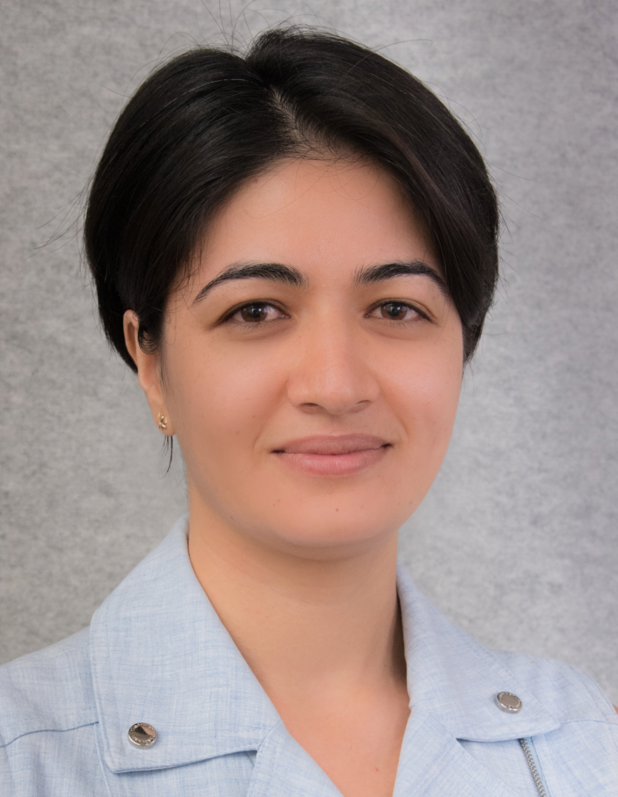

Razieh Nabi, PhD
Rollins Assistant Professor
Department of Biostatistics and Bioinformatics
Emory University
Email: razieh dot nabi at emory dot edu
[
Google Scholar]
[
Twitter]
[
LinkedIn]
I am a Rollins Assistant Professor in the
Department of Biostatistics and Bioinformatics at Emory University.
I graduated from the Johns Hopkins University in 2021 where I had the privilege of working with
Ilya Shpitser.
Many problems in the empirical sciences and rational decision making require causal, rather than associative, reasoning. The field of causal inference is concerned with establishing and quantifying cause-effect relationships to inform interventions, even in the absence of direct experimentation or randomization. Drawing valid causal conclusions from data is impeded by various factors such as the presence of unmeasured confounders, curse of dimensionality, missing and censored values, measurement error, social contagion, network interference, and data that reflect historical patterns of discrimination and inequality. The focus of my research is the development of novel causal methodologies to address these pressing challenges.
My research draws on methodological insights from both machine learning/artificial intelligence, especially using graphical models, and statistical theory, especially semiparametric statistics. My applications of interest include healthcare, social justice, and public policy.
Keywords: causal inference, missing data, algorithmic fairness, mediation analysis, graphical models, and semiparametric statistics